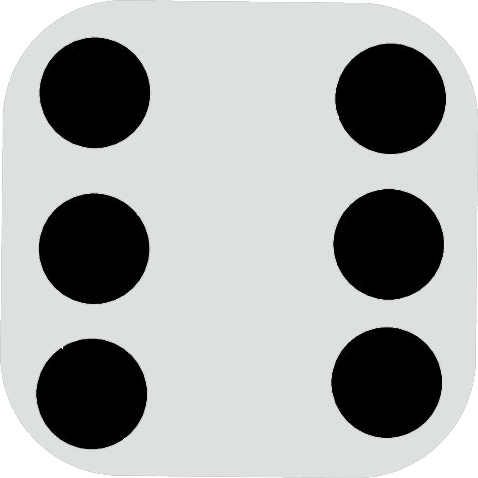

| Tulajdonság | Statisztika eredménye |
|---|---|
| 0 | |
| 0 | |
| 0 | |
| 0 | |
| 0 | |
|  | 0 |
| Dobások száma | 0 |
| Eldobott kockák száma | 0 |
| Dobások összege | 0 |
| Dobások átlaga | 0 |
| Eddigi legnagyobb dobás | 0 |
| Tripla hatos dobás | NEM volt |
| Egyforma dobások mennyisége | 0 |
| Különböző dobások mennyisége | 0 |
| Legtöbbet előfurduló kocka összeg | 0 |
| Legkevesebbet előfurduló kocka összeg | 0 |
| Páros kockák dobásának aránya | 0 |
| Páratlan kockák dobásának aránya | 0 |
| Kidobott sorozatok száma | 0 |